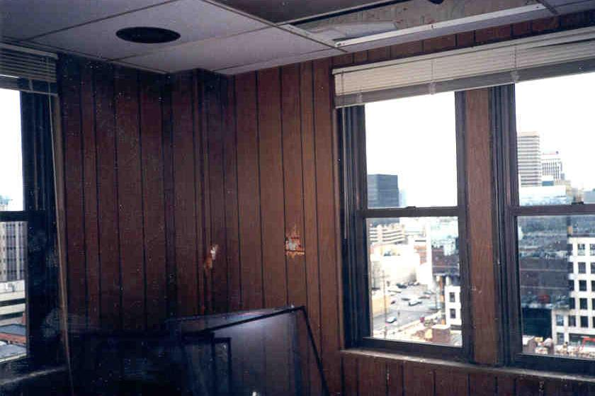
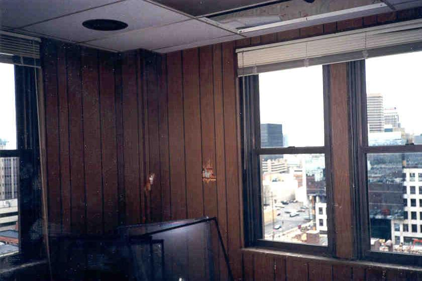
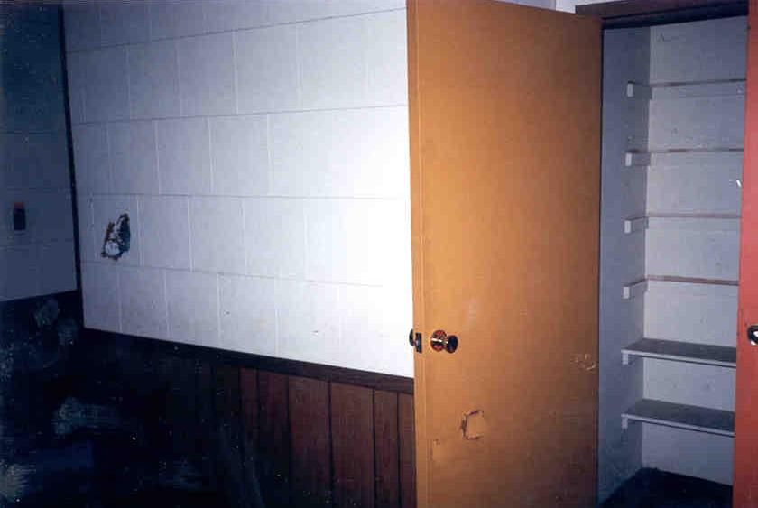
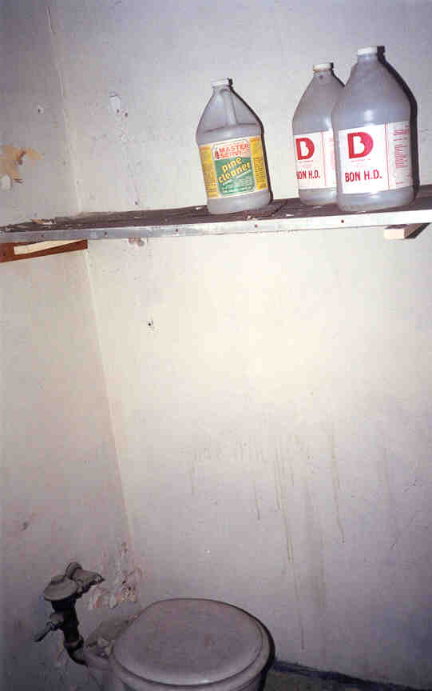
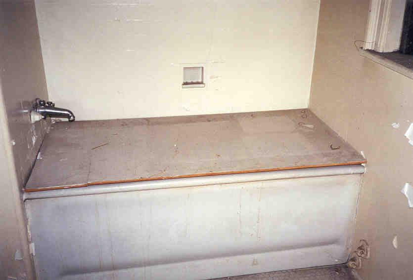
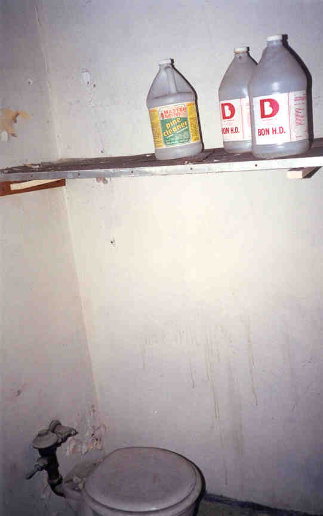
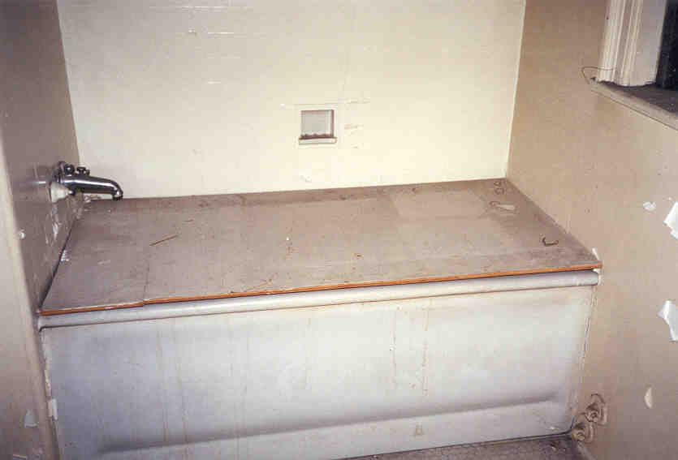
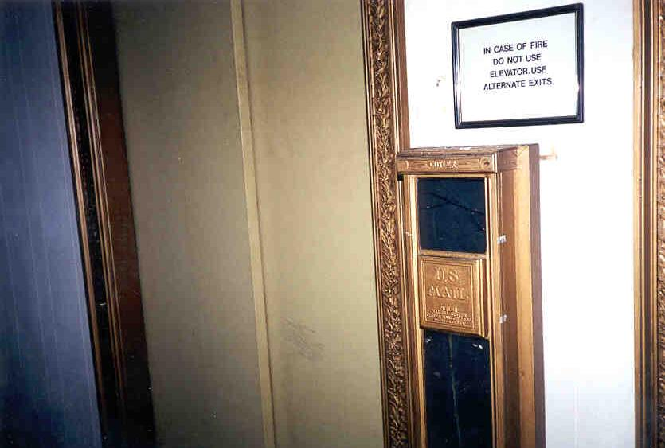
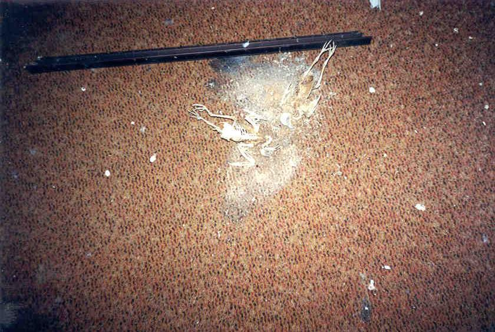

Upper Floors
The upper floors--all nine of them--contain hundreds of rooms: offices, bedrooms, bathrooms, linen closets, utility closets, furnace rooms, cafeterias. They're all in excellent condition, with intact windows providing excellent views. Some are amazingly preserved, with curtains and clean walls and floors that look like they've just been vacuumed. Others have the ceilings caving in.

 

One of the weirdest places was the cafeteria, which features a long counter and a big office building-style mess hall. Since the place was originally used as a hotel you have to wonder if it was originally meant to be this.


Before I die, I want to play paintball in the Seneca Hotel. Of course now that I've announced it here they'll probably install special anti-paintball robots or something.
 



At the north end of the building were the elevators, old-fashioned ones with an interesting feature: the mail drop. It's a glass chute that runs vertically through all ten floors. At the bottom it ends right beside the front desk, in a brass mailbox. If you wanted a letter mailed in the days when the Seneca was a luxury hotel, all you had to do was go to the end of your floor and send it down to join the hotel's outgoing mail.

As I explained earlier, homeless people live in this portion of the building. But they stick mainly to the third floor, from what I and others I've spoken to have experienced. There did seem to be an enclave of them on the eighth, but it might have just been some leftover blankets and such. Level three is where we came across them sleeping.

One of the weirdest things about the place was the number of birds who have died in there. Every room seemed to have a bird skeleton on the floor. Maybe it's part of some elaborate satanic ritual. More likely they got in and couldn't find a way out.

Back